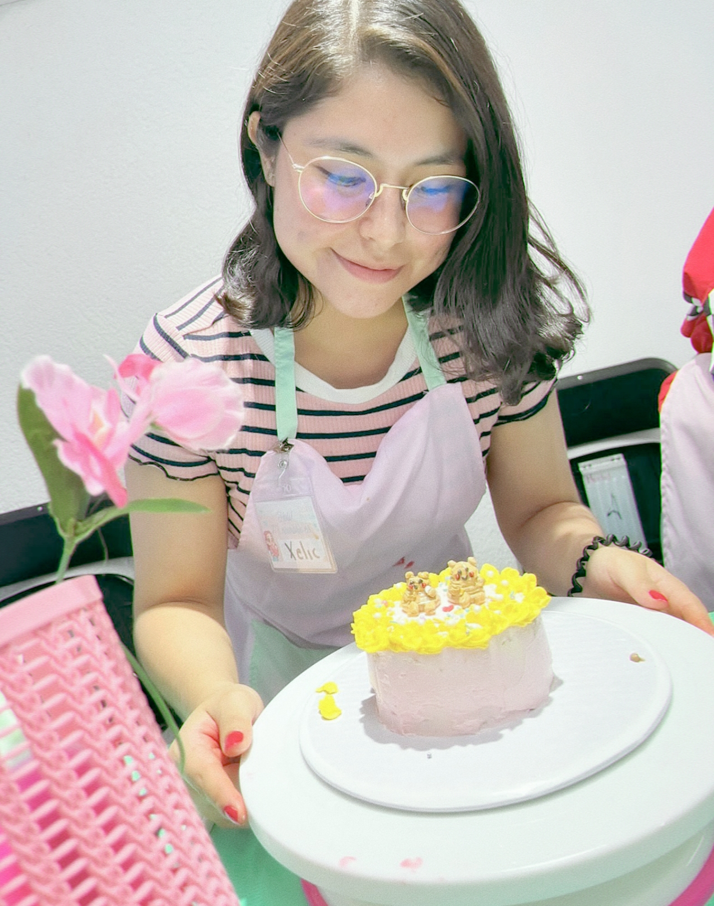
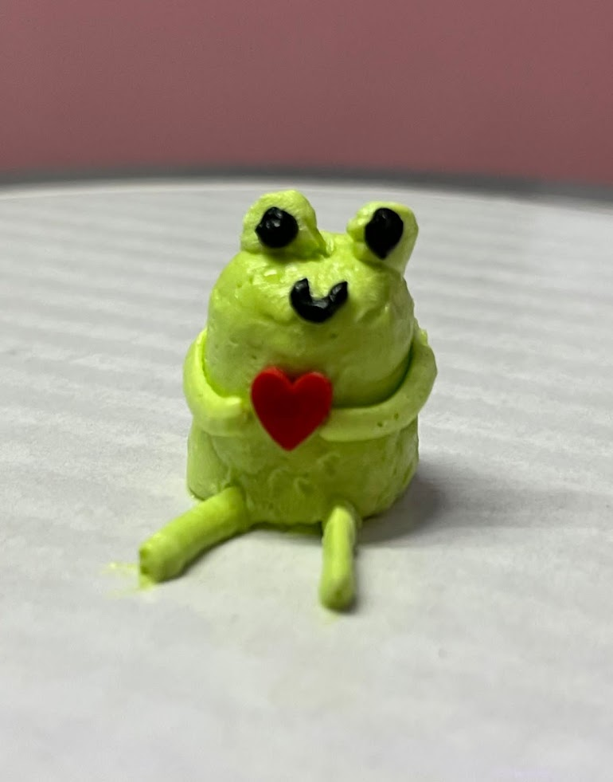

Conoce más sobre mí

Las Bento Cakes, han ganado fama gracias a su presentación y decoración espectacular. Estos mini pasteles, también conocidos como pasteles coreanos, han conquistado las redes sociales con su atractivo visual. Su tamaño compacto y su presentación en una caja pequeña los convierten en el regalo perfecto para cualquier ocasión especial.
InformaciónDurante el Seollal (Año Nuevo Lunar) y Chuseok (Día de Acción de Gracias Coreano), es común preparar y compartir estos pasteles como símbolo de buena suerte, salud y prosperidad.
Se utilizan ingredientes naturales para darles color, como el polvo de remolacha para el rojo, la espinaca para el verde y el camote morado para el púrpura. Además, se pueden encontrar rellenos dulces como pasta de frijol rojo, jalea de castañas, o frutas secas, lo que ofrece una experiencia de sabor rica y variada.

La elaboración de algunos mini pasteles coreanos es un arte que se ha transmitido de generación en generación. Técnicas como el moldeado a mano y el uso de herramientas tradicionales para crear patrones y formas decorativas son habilidades muy valoradas. Estos detalles artesanales no solo mejoran la presentación, sino que también reflejan la dedicación y el respeto por la tradición culinaria coreana.